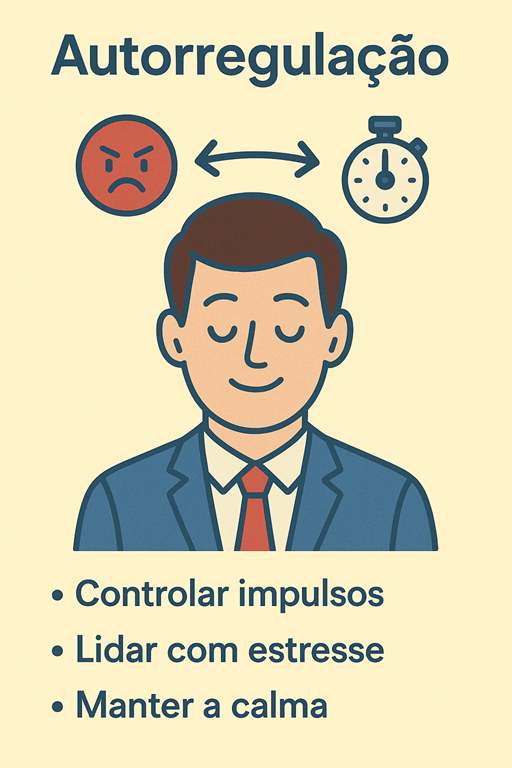
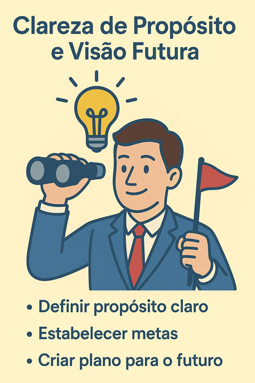

<main>
    <section class="section">
        <div class="container narrow">
            <h1 class="">Disciplina Liderança e a Construção das Relações Sustentáveis</h1>
            <h2>Trabalho Sobre Desenvolvimento de Líderes</h2>

            <card>
                <h3>Autoconsciência emocional</h3>
                <p>
                    Capacidade de reconhecer seus próprios estados emocionais, entender como eles influenciam decisões e comportamentos, e ajustar-se
                    quando necessário. É a base da inteligência emocional: um líder que não se percebe não consegue se regular.
                </p>
                
            </card>
            <card>
                <h3>Autorregulação</h3>
                <p>
                    
                </p>
                
            </card>
            <card>
                <h3>Clareza de propósito e visão futura</h3>
                <p>
                    
                </p>
                
            </card>

            <article class="doc-content">
                <div class="doc-content">
                    <p><span></span></p>
                    <h2>Introdução</h2>
                    <p></p>
                </div>
            </article>
        </div>
    </section>
</main>
